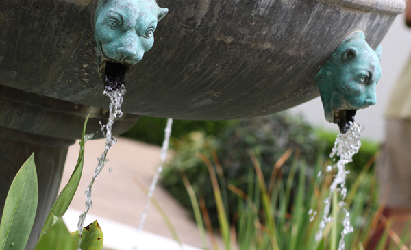

Sunny East Garden at the Getty Villa

It is hard to believe, but there are about 300 varieties of plants at the East Garden at the
Getty,
making
the experience truly remarkable. This area is one of the most tranquil spaces at the Villa.
As I
wandered
around, enjoying shade provided by sycamore and laurel trees and serenaded by splashing
water
from
two
sculptural fountains, I couldn't help but think of ancient Rome and the role of the garden
20
centuries
ago.
It was a place of peace and … Read More»
Posted in California, Los Angeles and Garden May 17, 2022 at 11:20am
The City Named After Queen Victoria
An hour and a half aboard a comfortable car ferry is all it takes to transport you from the modern, urban space that is Greater Vancouver to colonial Vancouver Island, seemingly stuck in the 18th century. The main town of Victoria showcases all the picturesque gems the British Empire was so proud of at the height of its spanning expansion. Representative yet inviting Victorian style municipal buildings, a protected harbor and cobblestone streets populated with small shops and artisanal … Read More»
Posted in Island, Canada and Roadtrip May 02, 2022 at 5:45pm